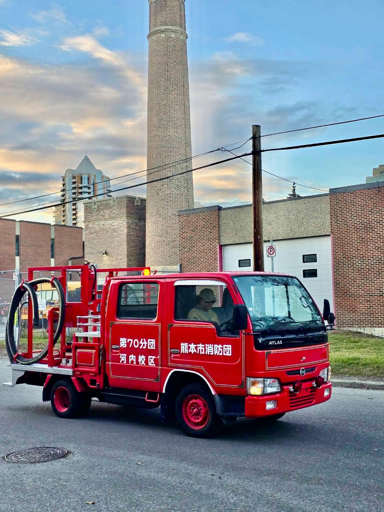

CEREMONIAL TEA
Whisked Matcha
Stone-ground tencha sourced from heritage Japanese tea estates. Whisked with bamboo chasen to rich emerald froth, served neat or over fresh micro-textured milks.
Single origin · Cloud lattes · Seasonal citrus tonicsCALGARY · WEDDINGS & PRIVATE EVENTS
Treat your guests to handcrafted matcha and espresso, served from an authentic Japanese fire truck.
A little surprise for your wedding or private event. A BIG memory to take away.

2004 Nissan Atlas Fire Engine
Follow the build and hear about Calgary pop-ups and our Spring 2027 launch.
OUR PURPOSE
We believe every little moment can turn into a big memory — everything we designed is intended to surprise and delight.
TAP TO TRANSLATE
Tap a line to read the original lettering painted on the truck's Japanese fire service doors.
Every character on Little Red tells where she served before arriving in Calgary.
Stationed with the municipal volunteer fire service in the historic castle city of Kumamoto.
The specific division squad assigned to protect local neighbourhoods and community gathering spots.
Kawachi is a coastal district of Kumamoto famous for tranquil citrus groves, mountain roads, and tight turns where this compact truck excelled.
THE ORIGIN STORY
Before bringing espresso and matcha to Calgary, our hero truck spent two decades serving communities under the volcanic ridgelines of Kyushu, Japan.
Compact, rugged, and immaculately maintained with under 10,000 original kilometres, she was retired and imported to Canada. Today, her chrome piping, diamond-plate bed, and original red bodywork are being repurposed into Calgary's most distinctive mobile beverage station.

WHAT WE POUR
You won't find a boring generic menu board here. We focus on two disciplines done exceptionally well.
Stone-ground tencha sourced from heritage Japanese tea estates. Whisked with bamboo chasen to rich emerald froth, served neat or over fresh micro-textured milks.
Single origin · Cloud lattes · Seasonal citrus tonicsCarefully balanced espresso extracted on our commercial bar. Sweet, dense double ristrettos poured into silky cortados, flat whites, and chilled sparkling tonics.
Local specialty beans · Precision extraction · Botanical poursBUILD UPDATES & CATERING ENQUIRIES
Follow the Little Red build, ask us a question, or tell us about an event you're planning. Launching Spring 2027 in Calgary. Catering enquiries are welcome now.
Not sure of your date, venue, or guest count? Share what you know. An enquiry does not confirm pricing, availability, or a booking.
Prefer email? Book@littleredcoffeeco.ca